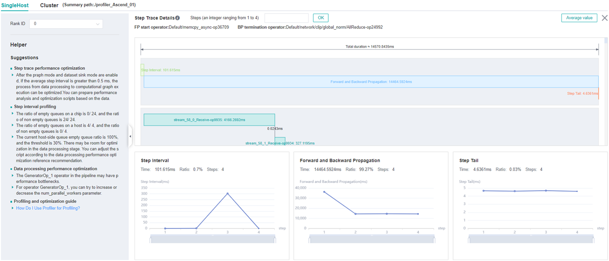
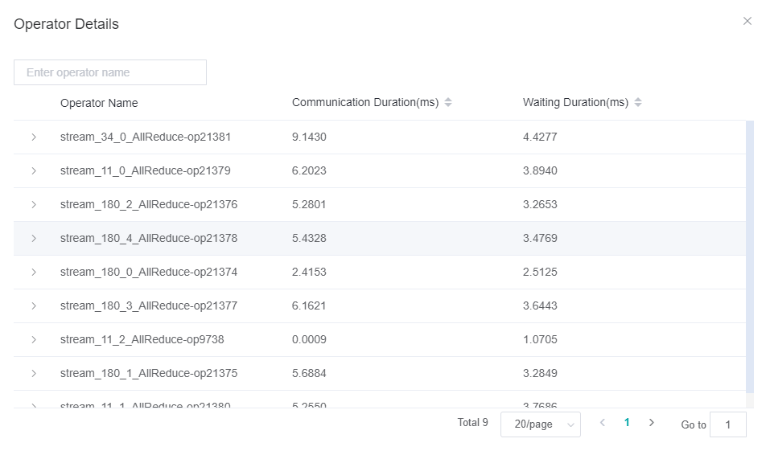

Performance Tuning Guide

Overview
MindSpore Insight provides a number of indicators from the perspective of single device and cluster to help users find performance bottlenecks. This paper focuses on the explanation of methodology. The purpose is to guide users how to use these indicators to find the performance bottlenecks in the network step by step. For the meaning of each indicator, users can refer to the following tutorials:
Users can read this article in combination with the tuning case, which is more intuitive to understand.
Single Device Performance Tuning
This document starts with the performance tuning of single device and help users quickly find the performance bottlenecks.
Analyse Entry
MindSpore Insight provides Step Trace as the performance analyse entry. Step Trace has three phases, users can observe these phases and determine where performance bottlenecks are first.
Step Interval: If this phase takes a long time, it indicates that the data processing speed cannot keep up with the training speed.
Forward and Backward Propagation: This phase is the duration for executing the forward and backward operations on the network, which handles the main calculation work of a step.
Step Tail：This phase is the duration for performing parameter aggregation and update operations in parallel training.

Figure 1: Step Trace
The user determines which phase takes the most time based on the time distribution of the step trace and further analyzes it in the corresponding section below.
Long Step Interval
Ideally, the training data should be loaded and enhanced on the Host side and sent to the Device side before forward propagation begins, otherwise the chip’s calculations are wasted as a result of waiting for the training data. Users need to go to the data preparation page to further confirm whether there is a performance issue with the data processing or data transmission.
Figure 2: Data Preparation Page
Feed Mode
Step 1：Please jump to the step interval tab on the data preparation details page to see how the size curve changes in the host queue. If the size in this queue is 0 in most cases, indicating that the data processing is a performance bottleneck, please refer to step 2 and continue to locate which operation should be optimized, otherwise the process of obtaining data from the iterator of the dataset module and sending it to device is a performance bottleneck, and users can continue to confirm in the following two steps:
Make sure if there is time-consuming custom logic in the script after getting data from the iterator of the dataset module, such as additional data cleaning, conversion, etc(MindSpore Insight can not obtain the time spent by the customized logic and the user is required to obtain the duration manually). If so, the user is required to optimize for this custom logic. Code is shown below:
iterator = mindspore.dataset.Cifar100Dataset() for item in iterator: start = time.time() item = transform_data(item) # customized function end = time.time() transform_time = end - start network(item) # feed data to the network
If there is no time-consuming customized logic in the script, it indicates that sending data from host to device is time-consuming, please feedback to the MindSpore Community .
Step 2：Please jump to the data processing tab on the data preparation details page, observe the inter-operator queue, and determine which operation has a performance bottleneck in the data processing. Principles of judgment can be found in the Performance Profiling page. Users can reference Optimizing the Data Processing and try to optimize the data processing performance.
Graph Mode
Step 1：Please jump to the step interval tab on the data preparation details page to see how the size curve changes in the data queue.
If size is not always 0 in the data queue, it indicates that the data preparation process is not the bottleneck. Based on daily tuning experience, the high probability of this is that GetNext operators are time-consuming, and users can go to the
Operator Time Consumption Rankpage to view GetNext operators in the AICPU tab. If it is confirmed that the GetNext operators take a long time, please feedback to the MindSpore Community .If there is 0 in the data queue, go to Step 2.
Step 2: See how the size curve changes in the host queue. If none of the size in the queue is 0, it indicates that the process by which training data is sent from host to device is a performance bottleneck, please feedback to the MindSpore Community . Otherwise it indicates that the data processing process is the performance bottleneck, please refer to Step 3 to continue to locate which operation of data processing has performance problems.
Step 3：Please jump to the data processing tab on the data preparation details page, observe the inter-operator queue, and determine which operation has a performance bottleneck in the data processing. Principles of judgment can be found in the Performance Profiling page. Users can reference Optimizing the Data Processing and try to optimize the data processing performance.
Long Forward And Backward Propagation
This phase mainly refers to the execution time of forward and reverse operators in the network. If this phase takes a long time, it is recommended that users analyze it in the following steps:
Step 1: Jump to the Operator Time Consumption Rank tab to see how much time each operator takes during training, focusing on the top-ranked operators. If there is no significant difference in precision between float16 and float32 for the same operator, please use float16 to optimize the performance. If the time spent by one operator is obvious unreasonable, please feedback to the MindSpore Community .
Step 2: Users can view the timeline page to observe information such as the start time of the operator, the time it takes, the execution sequence, and the concurrency between operators. Users can focus on whether the GetNext operator has parallel execution with the AICore operator, and whether there is free time between AICore operators (usually the free time between AI CORE operators is caused by AI CPU operators and communication operators being executed), if users encounter a situation where no type of operator is executed during a certain period of time, please feedback to the MindSpore Community .
Long Step Tail
This phase mainly contains parameter update in the single device scenario. From the actual tuning experience, this phase is very short time-consuming and will not be the performance bottleneck in the single device. If user encounter a long step tail in single device scenario, please feedback to the MindSpore Community .
Cluster Performance Tuning
The main factors affecting cluster performance are the following:
Slow node：Because the collective communication operator is executed synchronously, if there are slow nodes in the cluster, the performance of the cluster will be delayed by the barrel effect.
Slow link：If there is a problem with some links in the cluster, resulting in less bandwidth, it can drag down the performance of the cluster.
Reasonable division：Mainly for the model parallel and pipeline model. For the model parallel, many collective communication operators will be inserted because of re-distribution, and thus affect the cluster performance. If the pure communication time ratio is large, user should consider if has better division strategy to decrease the pure communication time. For pipeline parallel, if the FLOPs is not balanced due to unreasonable division, additional data waiting time between stages will be result in.
For the main factors that affect cluster performance, MindSpore Insight provides different indicators for data parallel, model parallel, pipeline parallel, and hybrid parallel to help users quickly identify performance bottlenecks in the cluster.
Analyse Entry
The cluster step trace page, as analyse entry for cluster performance tuning, provides different performance indicators for different parallel policies to help users confirm whether there are factors in the cluster that are mentioned above that affect cluster performance. Users can view corresponding parallel policies below depending on their scenario. Note that for hybrid parallel, if there is pipeline parallel, please see the pipeline parallel section below. Otherwise, if there is model parallel, please see the model parallel section. For clusters with fewer devices, users can directly observe the histogram to confirm the time-consuming phases of each device. For clusters with more devices, users can sort the different indicator columns to see the time-consuming distribution of all devices.
Data Parallel
For data parallel, the cluster step trace page provides step interval, forward and backward propagation, and step tail of all devices in the cluster.
Step 1：Observe the step interval in the cluster step trace page
Users should make sure if the step interval of one device is much longer than others first. If sure, it indicates that this device is a slow node and users can jump to the corresponding single device page, referring to the
Long Step Intervalsection ofSingle Device Performance Tuningto continue to locate the reasons why this phase takes a long time.If the step interval time of all devices are very long, users can jump to the single device page of any device and referring to the
Long Step Intervalsection ofSingle Device Performance Tuningto continue to locate the reasons why this phase takes a long time.
Step 2：Observe the forward and backward propagation in the cluster step trace page
Users should make sure if the forward and backward propagation of one device is much longer than others first. If sure, it indicates that this device is a slow node and users can jump to the corresponding single device page, referring to the
Long Forward And Backward Propagationsection ofSingle Device Performance Tuningto continue to locate the reasons why this phase takes a long time.If the forward and backward propagation time of all devices are very long, users can jump to the single device page of any device and referring to the
Long Step Intervalsection ofSingle Device Performance Tuningto continue to locate the reasons why this phase takes a long time.
Step 3: Observe the step tail in the cluster step trace page
Users should make sure if the step tail of one device is much longer than others first. If it is, it usually caused by slow node in the cluster. Users can refer to Step 1 and Step 2 to find the slow node.
If the step tail of all devices are essentially the same, and the phase is time-consuming, it is usually due to the long time taken by the AllReduce collective communication operators. Users can try to modify the all_reduce_fusion_config parameter to optimize the performance.
Model Parallel
For model parallel, the cluster step trace page provides step interval, computation time, and communication time of all devices in the cluster.
Step 1: Observe the step interval in the cluster step trace page
Please refer to step 1 of “Data Parallel”.
Step 2: Observe the computation time in the cluster step trace page
In the forward and backward propagation phase of model parallel, the calculation operators and the communication operators are alternately executed, and the slow nodes can not be found. So MindSpore Insight provides computation time to help users find slow node from cluster. Please refer to step 2 of “Data Parallel”.
Step 3: Observe the pure communication time in the cluster step trace page
On the premise of confirming that there is no slow node through step 1 and step 2, the pure communication time of each card in the cluster should be basically the same. If this phase takes a short time, it means that the communication time caused by re-distribution of operators is very short, and users do not need to consider optimizing the parallel strategy. Otherwise, users need to focus on analyzing whether the parallel strategy can be optimized. Users need to have a certain understanding of the principle of model parallelism before continue to analyse. The following steps are only to assist users in rationality analysis. Whether the parallel strategy has room for optimization and how to optimize it need users to make a judgment after specific analysis of their respective networks.
If this stage takes a long time, the user can choose any one of the devices and observe its timeline. In the timeline, MindSpore Insight marks the pure communication time, refer to ‘Pure Communication Op’ below.

Figure 3: Pure communication Op
In the process of analysis, users only need to pay attention to the pure communication time period, focusing on whether the insertion of the communication operator is reasonable, whether the time consumption of the communication operator is normal and so on.
If users find that a communication operator should not be inserted in theory but inserted actually, it indicates that the insert logic of MindSpore may be wrong, please feedback to the MindSpore Community .
If users find that communication operator will not be inserted if users divide another operator, please change the parallel strategy and divide another operator to decrease communication operator.
If users find that one communication operator must be inserted but takes a very long time, please go to step 4 to continue analyse.
Step 4：Users can go to the cluster communication page to check each time-consuming stage of the communication operator, as shown in the figure below.

Figure 4: Communication Operator Stage
If the communication duration is long, it means that the communication operator is communicating most of the time. Users can go to the
Link Information pageto observe the bandwidth to confirm whether there is a slow link that causes the communication time to be long. If there is a problem with the bandwidth of a link, users need to check the link and repair the link problem.Figure 5: Link Information
If the waiting duration is long, it means that there are slow nodes in the cluster, and users can confirm and repair the slow nodes through steps 1 and 2.
In addition to the communication and waiting time, there will be a Reduce time for AllReduce communication operators. If the time period is long, it means that the operator performing Reduce is abnormal. Please feedback to the MindSpore Community.
Pipeline Parallel
For pipeline parallel, the cluster step trace page provides step interval, stage time, computation time, communication time, communication time(including the receive operator only) and communication time(not including the receive operator) of all devices in the cluster.
Step 1: Observe the step interval in the cluster step trace page
Please refer to step 1 of “Data Parallel”.
Step 2: Observe the stage time in the cluster step trace page
Ideally, the time consumed by each stage should be basically the same, otherwise a fast stage waiting for slow stage to send data can drag down the performance of the cluster. There are several main reasons for the inconsistency of each stage, which can be confirmed by the user one by one.
Unbalanced FLOPs：Users can jump to the
FLOPs Heatmap Analysetab onResource Utilizationpage to check the distribution of FLOPs. If there is a big difference in the FLOPs of each stage, users need to readjust the operators divided into each stage to try to ensure that the FLOPs of each stage is balanced.Slow node：Users can screen the stage that takes a long time and sort the computation time to see if there is any obvious abnormality in this indicator of a device in the stage. If yes, the user can jump to the single card page, and refer to the subsection “Long Forward And Backward Propagation” of “Single Device Performance Tuning” to continue positioning.
Due to operator division in a stage, more communication operators are inserted, which lengthens the whole time of the stage. Users can screen the stage that takes a long time and observe the proportion of pure communication time (not including the receive operator) in the stage to the total iteration time. If the proportion is high, please refer to step 3 of “Model Parallel” to analyze whether the operator division can be optimized.
Step 3: Observe the communication time(including the receive operator only) in the cluster step trace page
This indicator reflects the time that the current stage is waiting to receive data from other stages. Theoretically, when the time consumed by each stage is basically the same, there will be no long time-consuming phenomenon in this period. Therefore, after users see this indicator, they can first analyze it according to step 2 to confirm whether there is a problem of excessive time difference between stage. If there is no problem mentioned in step 2, it means that the time consumption is normal and users don’t need to pay attention. Users can also go to the Timeline page to check the execution sequence of the Receive operator, and analyze the rationality of the time consumption of the operator in combination with their respective networks.